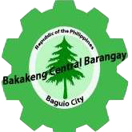

Barangay Bakakeng Central
About
Barangay Bakakeng Central, Baguio City is known for it's diversity and kind and honest residents. It is also one of the most widest and most populated areas in Baguio.
Bakakeng Central holds true to its laws and policies. From road reconstructions to maintaining orderliness in the different puroks, Bakakeng Central's officials does their best to govern the barangay's residents and maintain its orderliness as well as the resident's livelihood.
Bakakeng Central Sangguniang Barangay
Hon. Dan P. Daniel
Punong Barangay
Ariel A. Amino
Barangay Kagawad
Committee Chairman on
Infrastructure & Public
Transportation
Pauline G. Guilas
Barangay Kagawad
Committee Chairman on
Land & Anti-Squatting
Felisa M. Rivera
Barangay Kagawad
Committee Chairman on
Public Utilities Business
Establishment
Andrea Saturnina L. Lawaka
Barangay Secretary
Elpidio H. Ngohayon
Barangay Kagawad
Committee Chairman on
Finance, Appropriation &
Education
Melanie A. Miranda
Barangay Kagawad
Committee Chairman on
Tourism & ESWM
Stephen C. Miranda
Barangay Kagawad
Committee Chairman on
Social Services, Women & Family,
Youth & Sport Development
Wilfredo S. Cruz
Barangay Kagawad
Committee Chairman on
Peace, Order & Security
Marilou D. Palitogen
Barangay Treasurer
"We smile when we serve"